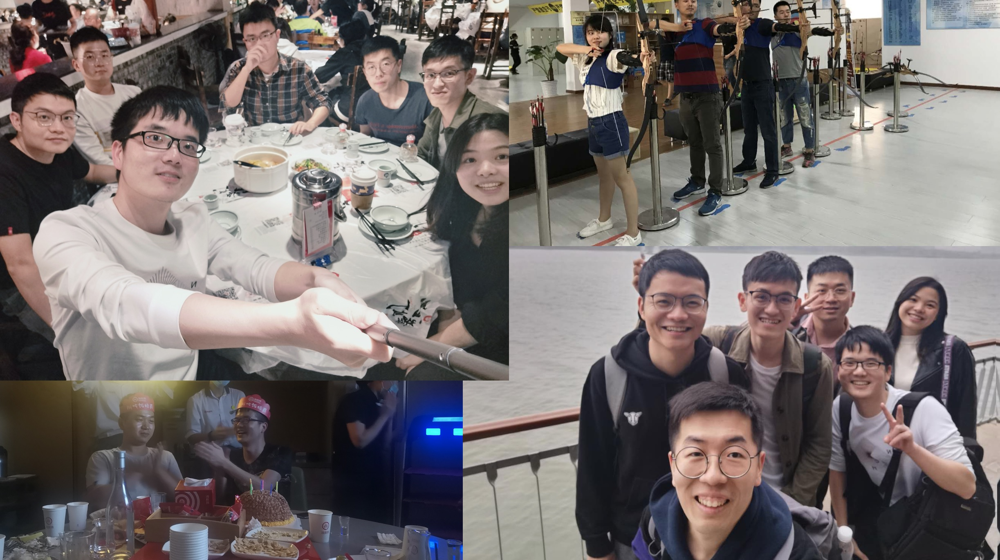
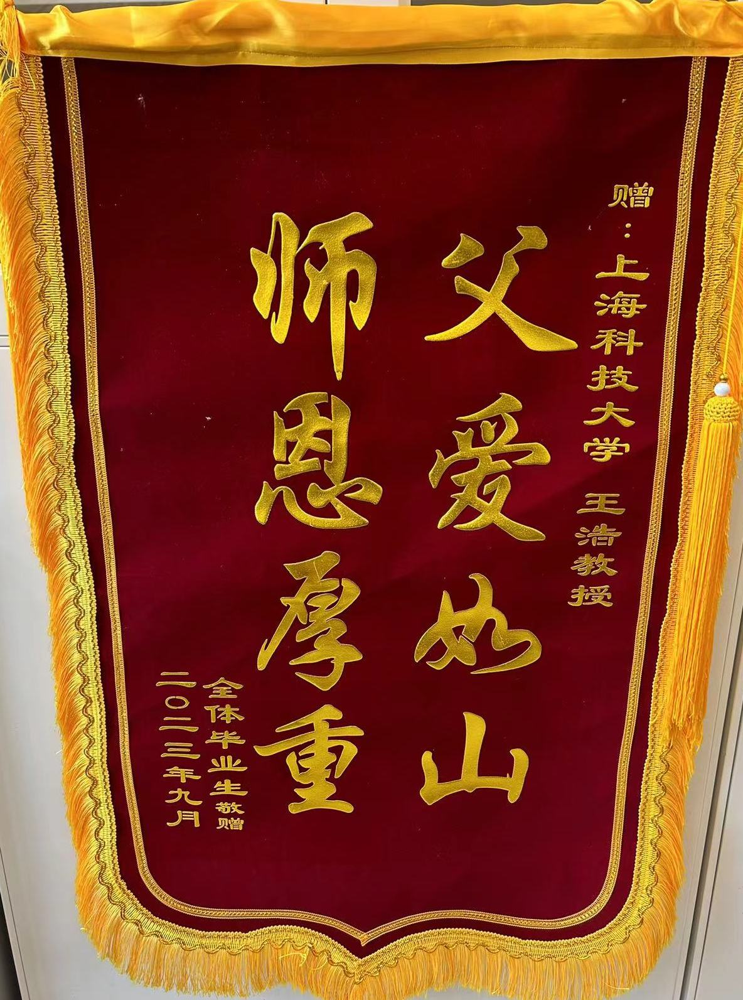
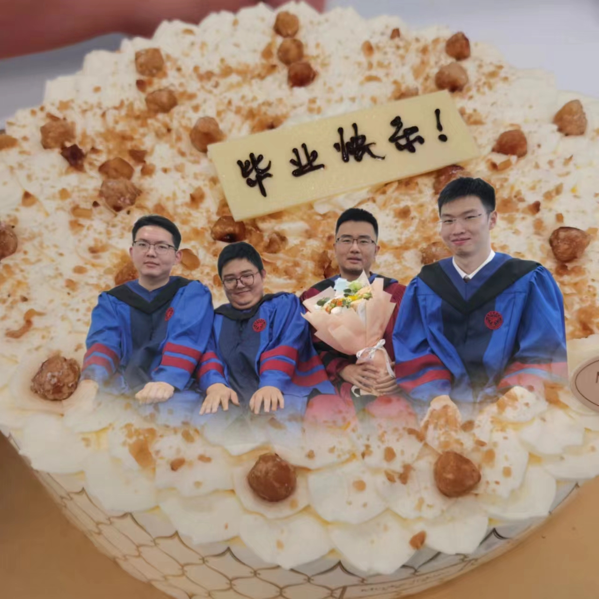

Hao Wang (王浩)
Ph.D., Associate Professor Rm. A-404, SIST Bldg. 1, 393 Middle Huaxia Rd, Shanghai 201210, China Mobile: +86-13917062037 Phone: +86-21-2068 5389 E-mail: wanghao1@shanghaitech.edu.cn, haw309@gmail.com |
My CV |
Bio
I received my B.S. & M.S. in Mathematics from Beihang University, Beijing, in 2007 and 2009, respectively, and Ph.D. degree from the Industrial and Systems Engineering Department, Lehigh University, Bethlehem, PA, USA in 2015. I was with ExxonMobil Corporate Strategic Research Lab in 2012, Mitsubishi Electric Research Lab in 2014, and GroupM R&D in 2015. Since 2016, I was a tenure-track assistant professor in the School of Information Science and Technology at ShanghaiTech University, and promoted to associate professor in 2023.
Research Interests
My research revolves around the area of nonlinear optimization as well as its applications in various disciplines, such as operations research, computer science, and statistics. The majority of my work involves designing algorithms, analyzing convergence, and developing software. I am currently working on the following topics.
- Stochastic nonlinear optimization algorithms
- Sparse regularization techniques in machine learning
- Low-rank matrix completion
- Nonlinear optimization algorithms for potentially infeasible problems
Working Papers
- Haoran Chu, Jiahua Lin, Haoyu He, Xudong Nan, Bocheng Xia, Hao Wang, Kunpeng Han, "MultiGeoNER: A Multilingual Address Named Entity Recognition Dataset and Benchmark for Real-World Geospatial Applications."
- Haoyu He, Hao Wang*, Jiashan Wang, Hao Zeng, "Effective Sparsity: A Unified Framework via Normalized Entropy and the Effective Number of Nonzeros," arXiv:2603.13826.
Papers under Review
- Haoyu He, Jinyu Zhuang, Haoran Chu, Shuhang Yu, J, T AI Group, Hao Wang, Kunpeng Han, "From Synthetic to Native: Benchmarking Multilingual Intent Classification in Logistics Customer Service," arXiv:2603.23172.
- Yinhao Zhao, Haoyu He, Chuanqi Ma, Hao Wang, "A Unified Fractional Regularization Framework for Sparse Recovery," submitted to Journal of Scientific Computing, under first review.
- Aike Yang, Hao Wang, "Stochastic Trust-Region Methods for Over-parameterized Models," submitted to Optimization Methods and Software.
- Hao Wang, Xiangyu Yang, Yichen Zhu, "Alternating Subspace Newton and Iteratively Reweighted ℓ1 Algorithms for Nonconvex Sparse Optimization," submitted to INFORMS Journal on Optimization, under second review.
- Kexin Li, Luwei Bai, Xiao Wang, Hao Wang*, "Anderson Acceleration in Nonsmooth Problems: Local Convergence via Active Manifold Identification," submitted to IMA Journal of Numerical Analysis.
Publications
Published/Accepted Journal Papers
- Hongying Liu, Hao Wang*, Haoran Chu, Yibo Wu, "Towards Convexity in Anomaly Detection: a New Formulation of SSLM with Unique Optimal Solutions," accepted by Journal of Machine Learning Research.
- Xiangyu Yang, Hao Wang*, Yichen Zhu, Xiao Wang, "Minimization Over the Nonconvex Sparsity Constraint Using A Hybrid First-order method," accepted by Journal of Scientific Computing.
- Yaohua Hu, Hao Wang, Xiaoqi Yang, "ℓ1-2 Regularization for Sparse Optimization: Consistency and Global Convergence," accepted by Mathematical Operations Research.
- Luwei Bai, Yaohua Hu, Hao Wang*, Xiaoqi Yang, "Avoiding Strict Saddle Points of Nonconvex Regularized Problems," SIAM Journal on Optimization, vol. 36, no. 2, pp. 938-967, 2026.
- Qiankun Shi, Xiao Wang*, Hao Wang, "A momentum-based linearized augmented Lagrangian method for nonconvex constrained stochastic optimization," Mathematical Operations Research, vol. 51, no. 1, pp. 92-133, 2025.
- Wengqing Ouyang, Yuncheng Liu, Ting Kei Pong, Hao Wang, "Kurdyka-Lojasiewicz Exponent via Hadamard Parameterization," SIAM Journal on Optimization, vol. 35, no. 1, pp. 62-91, August 2025.
- Hao Wang, Ye Wang, Xiangyu Yang, "Efficient Active Manifold Identification via Accelerated Iteratively Reweighted Nuclear Norm Minimization," Journal of Machine Learning Research, vol. 25, no. 319, pp. 1-44, 2024.
- Tiange Li, Xiangyu Yang*, Hao Wang, "A Fast Solver for Structured Optimization with Nonconvex ℓq,p Regularization," accepted by Pacific Journal of Optimization.
- Hao Wang*, Yining Gao, Jiashan Wang, Hongying Liu, "Constrained Optimization Involving Nonconvex ℓp Norms: Optimality Conditions, Algorithm and Convergence," Pacific Journal of Optimization, 2023.
- Xiangyu Yang, Hao Wang*, Jiashan Wang, "Towards an efficient approach for the nonconvex ℓp ball projection: algorithm and analysis," Journal of Machine Learning Research, vol. 23, no. 101, pp. 1-31, April 2022.
- Hao Wang*, Hao Zeng, Jiashan Wang, "An Extrapolated Iteratively Reweighted ℓ1 Method with Complexity Analysis," Computational Optimization and Applications, no. 83, pp. 967-997, September 2022.
- Hao Wang*, Hao Zeng, Jiashan Wang, "Convergence Rate Analysis of Proximal Iteratively Reweighted ℓ1 Methods for ℓp Regularization Problems," Optimization Letters, vol. 17, no. 2, pp. 413-435, 2023.
- Yuyan Zhou, Yang Liu*, Ming Li, Qingqing Wu, Hao Wang, "Joint Sensor Selection, Beamforming and Phase Control in Reconfigurable Intelligent Surface Aided IoT Networks," IEEE Wireless Communications Letters, vol. 11, no. 2, pp. 401-405, February 2022.
- Hao Wang*, Fan Zhang, Yaohua Hu, Yuanming Shi, "Nonconvex and Nonsmooth Sparse Optimization via Adaptively Iterative Reweighted Methods," Journal of Global Optimization, vol. 81, no. 3, pp. 717-748, October 2021.
- Hejie Wei, Zhihai Qu, Xuyang Wu, Hao Wang, Jie Lu, "Decentralized Approximate Newton Methods for In-Network Optimization," IEEE Transactions on Control of Network Systems, vol. 8, no. 3, pp. 1489-1500, September 2021.
- Xiangyu Yang, Hao Wang*, Yuanming Shi, Jun Lin, "A Proximal Iteratively Reweighted Approach for Efficient Network Sparsification," IEEE Transactions on Computers, vol. 71, no. 1, pp. 185-196, April 2022.
- Hao Wang*, Hao Zeng, Jiashan Wang, Qiong Wu, "Relating ℓp regularization and reweighted ℓ1 regularization," Optimization Letters, vol. 15, no. 8, pp. 2639-2660, January 2021.
- Hongying Liu, Hao Wang*, Mengmeng Song, "Projections onto the Intersection of ℓ1 and ℓ2 balls or spheres," Journal of Optimization Theory and Applications, vol. 187, pp. 520-534, October 2020.
- James V. Burke, Frank E. Curtis, Hao Wang*, Jiashan Wang, "Inexact Sequential Quadratic Optimization With Penalty Parameter Updates Within The QP Solver," SIAM Journal on Optimization, vol. 30, no. 3, 2020.
- Xiangyu Yang, Sheng Hua, Yuanming Shi, Hao Wang, Jun Zhang, Khaled B. Letaief, "Sparse Optimization for Green Edge AI Inference," Journal of Communications and Information Networks, vol. 5, no. 1, 2020.
- Zhihua Zhao, Hao Wang*, Xiangyu Yang, Fengmin Xu, "CVaR-Cardinality Enhanced Indexation Optimization with Tunable Short-selling Constraints," Applied Economics Letters, March 2020.
- Hao Wang*, Fan Zhang, Jiashan Wang, Yuyang Rong, "An Inexact First-Order Method for Constrained Nonlinear Optimization," Optimization Methods and Software, pp. 1-34, January 2020.
- Fan Zhang, Hao Wang*, Jiashan Wang, Kai Yan, "Inexact Primal-Dual Gradient Projection Methods for Nonlinear Optimization on Convex Set," Optimization, pp. 1-27, December 2019.
- Yang Liu, Jing Li, Hao Wang, "Robust Beamforming in Wireless Sensor Networks," IEEE Transactions on Communications, vol. 67, no. 6, pp. 4450-4463, June 2019.
- Qiong Wu, Fan Zhang, Hao Wang*, Jun Lin, Yang Liu, "Parameter-free ℓp-Box Decoding of LDPC Codes," IEEE Communications Letters, vol. 22, no. 7, pp. 1318-1321, July 2018.
- James V. Burke, Frank E. Curtis, Hao Wang*, Jiashan Wang, "Iterative Reweighted Linear Least Squares for Exact Penalty Subproblems on Product Sets," SIAM Journal on Optimization, vol. 25, no. 1, pp. 261-294, 2015.
- James V. Burke, Frank E. Curtis, Hao Wang*, "A Sequential Quadratic Optimization Algorithm with Fast Infeasibility Detection," SIAM Journal on Optimization, vol. 24, no. 2, pp. 839-872, 2014.
- Hao Wang*, Hongying Liu, Yong Xia, "Two-point Step Size Iterative Soft-thresholding Method for Sparse Reconstruction," International Journal of Computer Mathematics, vol. 88, no. 12, pp. 2527-2537, April 2010.
- Hao Wang*, Hongying Liu, Yong Xia, "Two-step Version of the Fixed Point Continuation Method for Sparse Reconstruction," Frontiers of Mathematics in China, vol. 5, no. 3, pp. 575-588, May 2010.
Published Conference Papers
- Yanjie Chen, Likun Cai, Wei Cheng, Hao Wang, "Super-Resolution Coding Defense against Adversarial Examples," ICMR 2020, pp.189-197, June 2020.
- S. Hua, X. Yang, K. Yang, G. Yin, Y. Shi, H. Wang, "Deep Learning Tasks Processing in Fog-RAN," IEEE 90th Vehicular Technology Conference (VTC2019-Fall), 2019.
- T. Jiang, X. Yang, Y. Shi, H. Wang, "Layer-wise Deep Neural Network Pruning via Iteratively Reweighted Optimization," ICASSP 2019, pp. 5606-5610, 2019.
- Jie Lu, Xuyang Wu, Hejie Wei, Hao Wang, "Distributed Second-Order Methods for Convex Optimization Over Networks," ICARCV, Singapore, 2018.
- Fan Zhang, Qiong Wu, Hao Wang, Yuanming Shi, "Topological interference alignment via generalized low-rank optimization with sequential convex approximations," IEEE SPAWC, Greece, 2018.
- Fan Zhang, Qiong Wu, Hao Wang, Yuanming Shi, "ℓp-Box Optimization for Green Cloud-RAN via Network Adaptation," IEEE VTC, Chicago, 2018.
- Q. Wu, F. Zhang, H. Wang, Y. Shi, "Generalized Low-Rank Matrix Completion via Nonconvex Schatten p-Norm Minimization," IEEE 88th VTC-Fall, Chicago, 2018.
Research Funding
- "Optimization Methods for Nonconvex Low-Rank Matrix Regularization with Applications in Large-Scale Computing," General Program of the National Natural Science Foundation of China (NSFC), Project No. 12571326, Funding: 430,000 CNY, Duration: 01/2026-12/2029, Role: Principal Investigator (PI).
- "High performance algorithms for large-scale nonconvex regularized machine learning," Natural Science Foundation of Shanghai, No. 21ZR1442800, Funding: 200,000 CNY, Duration: 07/2021-06/2024, PI.
- "Cubic regularization algorithms for large-scale machine learning problems," Young Scientists Fund of NSFC, No. 12001367, Funding: 240,000 CNY, Duration: 07/2020-06/2023, PI.
- "Model Reduction Based Tensor Recovery Methods for Partial Differential Equations with High-Dimensional Random Inputs," NSFC, No. 12071291, Funding: 510,000 CNY, Duration: 01/2021-12/2024, Co-PI with Prof. Qifeng Liao.
- "Data Driven Physics-Informed Uncertainty Quantification for Atmospheric Aerosols," Shanghai 2020 Scientific and Technological Innovation Program, No. 20JC1414300, Funding: 500,000 CNY, Duration: 10/2020-09/2023, Co-PI with Prof. Qifeng Liao.
- Shanghai Eastern Youth Scholar, Shanghai Municipal Education Commission, 2017, Funding: 400,000 CNY.
Students
Former PhD Students
- Fan Zhang (张帆) (Fall 2016 - Spring 2021): Dissertation: Inexact First-Order Methods for Constrained Nonlinear Optimization. Current Position: Huawei → CATL → Apple.
- Xiangyu Yang (杨翔宇) (Fall 2017 - Spring 2022): Dissertation: Nonconvex Regularizer Constrained Optimization in Machine Learning: Algorithm, Analysis and Applications. Current Position: Associate Professor, Math Department, Henan University.
- Aike Yang (杨艾可) (Fall 2023 - Spring 2028 expected).
Former Masters Students
- Qiong Wu (吴琼) (Fall 2016 - Spring 2019): Excellent Graduate Student Award. Thesis: Research on Norm-based Optimization Problems and Algorithms. Current Position: Cainiao → Alibaba.
- Yanjie Chen (陈彦洁) (Fall 2017 - Spring 2020): Thesis: Defense Against Adversarial Examples Based on Super-Resolution Coding. Current Position: Bytedance-Speech → Master student, Machine Learning & Information Security, University of Victoria.
- Xin Deng (邓鑫) (Fall 2018 - Spring 2021): Thesis: A Hybrid First-Order Method for Nonconvex ℓp-ball Constrained Optimization. Current Position: Cainiao → ByteDance → Ant Group → Hellobike.
- Wei Jiang (蒋微) (Fall 2018 - Spring 2021): Thesis: Nonconvex ℓp-ball Constrained Minimization via Projected Gradient Descent. Current Position: Algorithm Engineer, Rongshu Tech.
- Hao Zeng (曾昊) (Fall 2019 - Spring 2022): Thesis: Algorithms and Theories for ℓp Regularization Problems. Current Position: Cainiao → Moffett AI → Little Red Book.
- Yining Gao (高亦宁) (Fall 2019 - Spring 2022): Thesis: Constrained Optimization Involving Nonconvex ℓp Norms: Optimality Conditions, Algorithm and Convergence. Current Position: China Banking and Insurance Regulatory Commission (Jiaxing, Zhejiang).
- Song Mao (毛松) (Fall 2019 - Spring 2022): Thesis: An efficient primal-dual Newton method for projections onto ℓ1,∞ norm ball. Current Position: Shanghai AI Lab.
- Ye Wang (王野) (Fall 2020 - Spring 2023): Thesis: Algorithm Design and Theoretical Analysis for Solving Schatten-p Norm Regularization Problem. Current Position: Algorithm Engineer, Smart Logic.
- Qiankun Shi (石乾坤) (Fall 2020 - Spring 2023): Thesis: First-order Penalty Methods for Large Scale Constrained Optimization. Current Position: PhD candidate at Sun Yat-sen University.
- Tiange Li (李天戈) (Fall 2020 - Spring 2023): Thesis: Research on the acceleration strategy of group sparse optimization. Current Position: Algorithm Engineer, Qboson.
- Kexin Li (李可鑫) (Fall 2021 - Fall 2024): Thesis: Study on the Iteratively Reweighted Algorithms with Anderson Acceleration. Current Position: PhD, Industrial Engineering, University of Arkansas.
- Luwei Bai (白璐伟) (Fall 2021 - Fall 2024): Thesis: Avoiding strict saddle points of nonconvex regularized problems. Current Position: PhD, Industrial Engineering, Arizona State University.
- Chuanqi Ma (马传琪) (Fall 2021 - Spring 2025): Thesis: Sparse Optimization and Algorithmic Research Based on Fractional Regularization. Current Position: HotMaxx, Shanghai.
- Shiji Zuo (左世纪) (Fall 2022 - Spring 2025): Thesis: Research on the Adaptive Stochastic Linearized Augmented Lagrangian Method. Current Position: PhD, Math, Rensselaer Polytechnic Institute.
- Yichen Zhu (朱亦辰) (Fall 2022 - Spring 2025): Thesis: Second Order Method for Sparsity Regularizations. Current Position: Postal Savings Bank of China, Shanghai.
- Yikai Wang (王一开) (Fall 2020 - Spring 2023, co-advised with Prof. Yue Qiu): Thesis: Deep learning algorithms for partial differential equations with high dimensional random parameters. Current Position: Software Engineer, Csii.
- Jianguo Huang (黄建国) (Fall 2021 - Spring 2024, co-advised with Prof. Yue Qiu): Thesis: Research on Iteratively Reweighted Algorithms with Anderson Acceleration. Current Position: Research Assistant (RA), Nanyang Technological University.
- Jiankui Zhou (周健魁) (Fall 2021 - Spring 2024, co-advised with Prof. Yue Qiu): Thesis: Research on Iteratively Reweighted Algorithms with Anderson Acceleration. Current Position: iFLYTEK (Hefei).
- Yuhao Meng (孟宇煌) (Fall 2021 - Spring 2024, co-advised with Prof. Yue Qiu): Thesis: Research on Iteratively Reweighted Algorithms with Anderson Acceleration. Current Position: PhD, Delft University of Technology.
Current Masters Students
- Zirui Han (韩子睿) — Fall 2023 - Spring 2026 (expected)
- Haoran Chu (褚浩然) — Fall 2023 - Spring 2026 (expected)
- Ken Chen (陈肯) — Fall 2024 - Spring 2027 (expected)
- Haoyu He (何好雨) — Fall 2024 - Spring 2027 (expected)
- Yuqi Yang (杨宇麒) — Fall 2024 - Spring 2027 (expected)
- Yiran Liu (柳亦然) — Fall 2025 - Spring 2028 (expected)
- Yinhao Zhao (赵印豪) — Fall 2025 - Spring 2028 (expected)
 | |
 |
 |
 |
|
 |